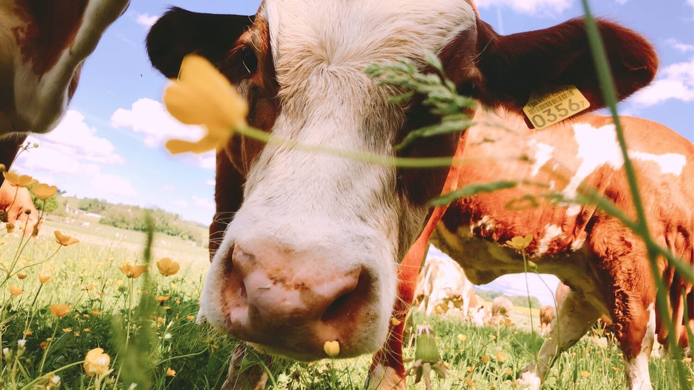
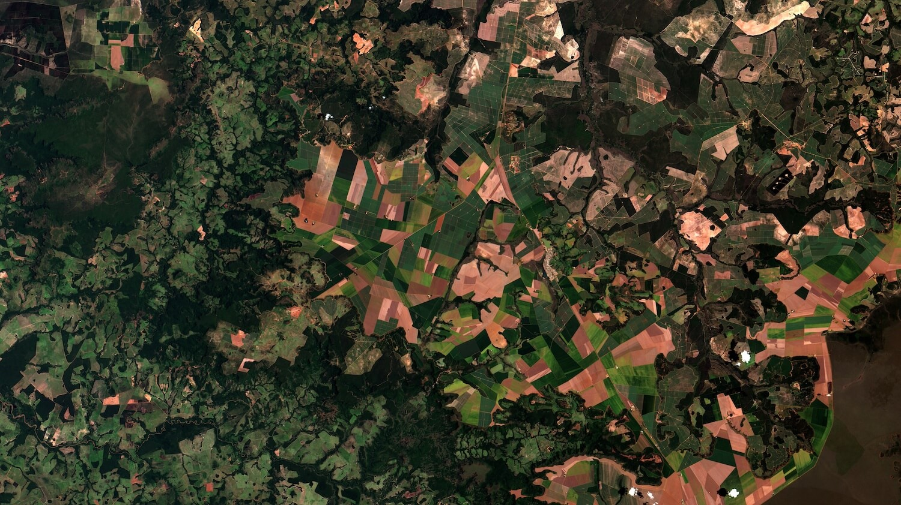
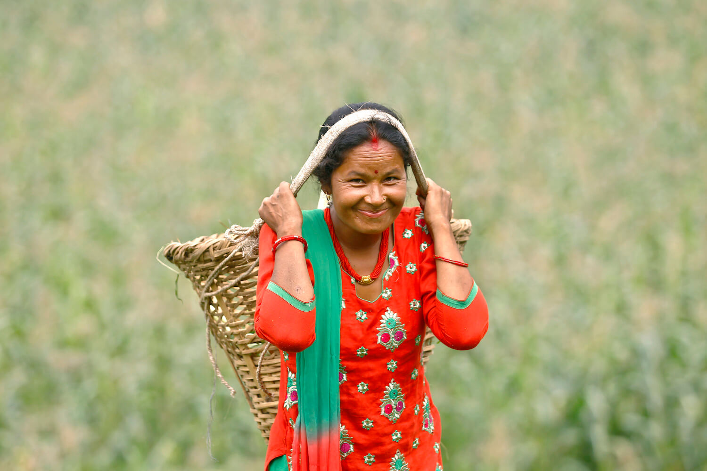
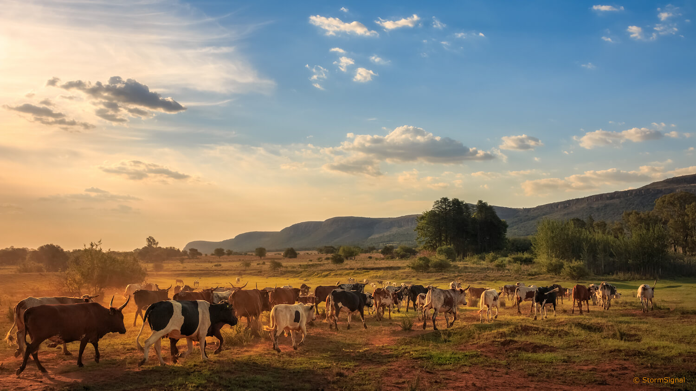

Livestock husbandry is amongst the largest growing subsectors of the agricultural industry. This is particularly evident in developing countries, where the increase for the demand of livestock products is closely linked to rapid population
growth, income growth and infrastructural development.
As people become wealthier, the desire for higher quality, varied diets increases as well. By 2050, the demand for livestock products is expected to increase by 70%, whilst the global population is projected to reach 9.7 billion. To meet
this per capita demand, livestock husbandry is intensifying to increase its productivity output, whilst maximizing opportunity costs and profit per land.

Cattle produce methane and nitrous oxide through enteric fermentation and manure storage. | The Kingfisher
The livestock sector provides employment to 1.3 billion people and secures the livelihoods of 600 million smallholder farmers—providing food security for when crops may fail. Livestock husbandry is a practice dating back to the Neolithic,
where animals are domesticated and bred for human purposes.
Today, livestock agriculture varies widely in practice and productivity output—from traditionally nomadic or subsistence farming (low inputs/outputs, farmers produce enough to survive), extensive farming (limited inputs of
labour,
fertilizer and capital relative to land used) and intensive farming (heavy input of fertilizers, mechanization and capital to maximize yields).
However, the increase of intensive livestock practices often comes at the expense of the environment, such as through soil depletion, higher energy consumption, freshwater use and disease outbreaks. In particular, it has shown to drive high
rates of land-use change and significantly contribute to greenhouse gas emissions (GHG).
‘Intensive livestock practices often come at the expense of the environment.’
As pressure on livestock productivity increases, there are greater inputs fed into the system, especially land-use change in order to grow cereals for livestock feed. Livestock takes 83% of land used for agriculture, amounting to 30% of
total terrestrial land. Intensive farming practices have also become adamant in maximizing their profit per unit of land; Brazil, for example, has nearly doubled the number of cattle within their feedlots over the past decade.
Perhaps the most well-known example of livestock-driven deforestation is the Legal Amazon, which has lost 11,100 km2 since the start of 2021. A study found that secondary forests experiencing multiple slash-and-burn deforestation
events
grow at a 20% to 50% slower rate than primary forests. They also found if these livestock practices continue, it will take secondary forests more than 100-years to achieve the above-ground carbon potential of primary forests—a
detrimental consequence on a sink that stores 10% of global carbon.
Another recent study proposed that African tropical forests offer more stability in sequestering carbon than the Amazon, which are bound to face increased deforestation risks as the continent embarks on its own ‘Livestock Revolution’.
Globally, the clearing of forests, which act as vital carbon dioxide sinks during anthropogenic climate change, in order to sustain livestock husbandry, is common practice.

Deforestation in the Amazon Rainforest to make space for livestock plots. | Coordenação-Geral de Observação da Terra / INPE / Flickr
Along with the loss of carbon sinks associated with livestock production, cattle produce extensive amounts of methane and nitrous oxide through enteric fermentation and manure storage. Succeeding the Green Revolution (1950s to the
late-1960s), where technical initiatives increased global agricultural production, the Northern Hemisphere experienced a ‘Livestock Revolution’. Industrial globalization, urbanization and the westernization of diets opened up markets for
large livestock-product retailers to exploit.
Since the 1970s, the IPCC has estimated a 1.4-fold, 1.6-fold and 3.7-fold increase, in numbers of bovine, pigs and poultry, respectively. Ahmed(2020) found that at around 8.3 gigatonnes of carbon dioxide equivalent
(GtCO2e) per
year, ‘cattle and dairy cows alone emit enough GHGs to put them on par with the highest emitting nations’—where annually China releases ≈14 GtCO2e, the USA ≈7 GtCO2e and the EU ≈4.5 GtCO2e.
A study by Zhuang (2017) used the life cycle assessment (LCA), in order to investigate whether pastoralism (i.e. subsistence farming) produces lower GHG emissions than combined extensive and intensive practices. The LCA is
‘a scientifically
robust methodology used to evaluate the GHG mitigation measures of different livestock husbandry systems’, by quantifying production emissions and identifying components that ‘maximize efficiency and minimize environmental impacts’.
‘Cattle and dairy cows alone emit enough GHGs to put them on par with the highest emitting nations.’
China has been promoting the conversion from pastoralism into these combined practices, including feedlots, artificial grasslands, fertilisers and forage processing plants. Zhuang found that, ‘the GHG emission intensities of per area and
per carcass weight in the pastoralism system were significantly lower than that in the combined extensive/intensive system by 45.21% and 40.08%, respectively.’
They also found that soil carbon uptake played a large role in mitigating GHG emissions. Still, soil carbon sinks were more effective in pastoral systems than in the combined system. Even on a small-scale, the study demonstrates that it is
extensive and intensive livestock husbandry, not subsistence practices, which are significantly contributing to climate change.
The industry must transform into a sustainable food system, whilst ensuring food security for the exponentially growing population. Bottom line: we must drastically decrease our meat consumption. According to Poore and Nemecek (2019)
plant-based diet would cut land used for livestock husbandry by 76% and halve its GHG emissions. Plus, only 55% of crops are directly used to feed people, where a further 36% is allocated to solely feeding livestock.

Autonomous, local food systems: Smallholder female farmer in Nepal, as part of Rural Women's Economic Empowerment Joint Programme led by the UN, the FAO, International Fund for Agricultural Development and World Food Programme. Chandra
Kala Thapa converted her grain field into producing high-quality vegetables. | UN Women / Flickr
According to the FAO (2012), if just 40% of crops produced for livestock feed today were allocated to growing human food, there would be enough cropland to feed 9 billion people in 2050—improving both sustainability and food security.
However, abolishing meat entirely is not applicable to all regions, due to economic and climate conditions, as well as how ingrained it is in certain cultures.
An analysis conducted by Godber and Wall (2014) used sensitivity, exposure and adaptive capacity models to assess the vulnerability of nations’ livestock husbandry systems in response to population growth and climate
change. They found that 11 of the 15 most vulnerable nations were in Africa and Asia. Where higher income countries may optionally incorporate animal products into their diets, vulnerable nations which already have compromised food
security, do not have such luxury of choice. Therefore, aside from making more environmentally conscious, dietary choices, system-based change needs to take place.
Enhancing the autonomy of agricultural economies is vital in promoting sustainable farming practices. Imposing higher tariffs on food imports and ‘buying local’ protects farmer’s livelihoods from foreign-competing market prices, whilst also
cutting GHG emissions during transport. Governments should also be encouraged to reform subsidies in order to award, and thus encourage, regenerative food practices.
‘Governments globally spend $500 billion a year on unsustainable, destructive food practices.’
According to the Nature Conservancy (2020), governments globally spend $500 billion a year on unsustainable, destructive food practices. Thus, shifting incentives to redirect these subsidies, will not only mitigate livestock impacts on
climate change, but also actively restore biodiversity.
Furthermore, supporting the rights of rural and indigenous communities, who practice subsistence and integrated farming, is another way of promoting agricultural livestock sustainability. This would create profitable jobs, forge healthy
relationships between rural and urbanized areas, without the need to completely cut meat from the human diet.
The IPCC (2019) is confident that integrated farming (i.e., agroforestry, grazed forage rotation and agropastoral) is highly relevant to producing more products per unit of land. The European Commission considers that integrated
farming
offers a balanced trade-off between meeting yield demands without significantly contributing towards GHG commissions—whilst many studies have found these to have varying degrees of benefits towards biodiversity.

The African continent is expected to soon embark on its own intensive livestock revolution. | Storm Signal / Flickr
A review by Randall (2012) found that significantly more studies have investigated the impact of organic farming on the environment than integrated. More research on combined organic and integrated farming should be conducted to see how
their strategies may be complemented to ensure food security.
Other ‘technological’ mitigation measures, such as adopting smart supplements (i.e., feed and manure additives), reducing the forage-to-concentrate ratio of cattle, or manure biofiltering, have been proposed to reduce methane and nitrous
oxide emissions. However, such small-scale innovations only ‘treat the symptoms’ of GHG emissions, rather than tackle the root cause within livestock husbandry through system-based change.
‘Livestock husbandry significantly contributes to climate change, accounting for 14.5% of total anthropogenic GHG emissions.’
Along with a cohort of additional environmental impacts, livestock husbandry significantly contributes to climate change, accounting for 14.5% of total anthropogenic GHG emissions. Although shifting to a solely plant-based diet should be
encouraged across-the-board, mitigation strategies need to consider the socio-economic and climate aspects of each region.
Overall, the livestock industry does not need to be abolished to reduce its impact on climate change. However, governments must be incentivized to transform their agricultural economies into regenerative systems—local, integrated farming
practices that can achieve both food security and sustainability.
Featured Image: Juliana Amorim | Unsplash
Ahmed J., Almeida E., Aminetzah D., Denis N. et al. (2020) Agriculture and Climate Change: Reducing emissions through improved farming practices. McKinsey & Company.
Costales A., Gerber P. and Steinfield H. (2005) Report: Under the livestock revolution. FAO – Global Perspective.
Godber O. and Wall R. (2014) Livestock and food security vulnerability to population growth and climate change. Global Change Biology. Volume 20, pages 3092-3102.
Heinrich et al. (2021) Large carbon sink potential of secondary forests in the Brazilian Amazon to mitigate climate change. Nature Communications. Volume 12.
Hubau W., Simon L. and Zemagho L. (2020) Asynchronous carbon sink saturation in African and Amazonian tropical forests. Nature. Volume 579, pages 80-87.
Mbow, C., C. Rosenzweig, L.G. Barioni, T.G. Benton, M. Herrero, et al. (2019) Climate Change and Land: an IPCC special report on climate change, desertification, land degradation, sustainable land management, food security, and
greenhouse gas fluxes in terrestrial ecosystems. IPCC—Food Security.
Latino L., Pica-Ciamarra U. and Wisser D. (2020) Africa: The livestock revolution urbanizes. Global Food Security. Volume 26.
Otte J. and Pica-Ciamarra (2009) The ‘livestock revolution’: rhetoric and reality. FAO – Pro-Poor Livestock Policy Initiative: A living from livestock research report.
Poore J. and Nemecek T. (2019) Reducing food’s environmental impacts through producers and consumers. AAAS–Science: Sustainability. Volume 363, Issue 6429.
Randall N. and James K. (2012) The effectiveness of integrated farm management, organic farming and agri-environment schemes for conserving biodiversity in temperate Europe - A systematic map. Environmental Evidence. Volume
1, article 4.
Thornton P.K. (2010) Livestock Production: recent trends, future prospects. Philosophical Transactions of the Royal Society B. Volume 365, pages 2853-2867.
UNEP (2020) Emissions Gap Report 2020. United Nations Environment Programme.
Zhuang M., Gongbuzeren and Li W. (2017) Greenhouse gas emission of pastoralism is lower than combined extensive/intensive livestock husbandry: A case study on the Qinghai-Tibet Plateau of China. Journal of Cleaner Production.
Volume 147, pages 512-522.